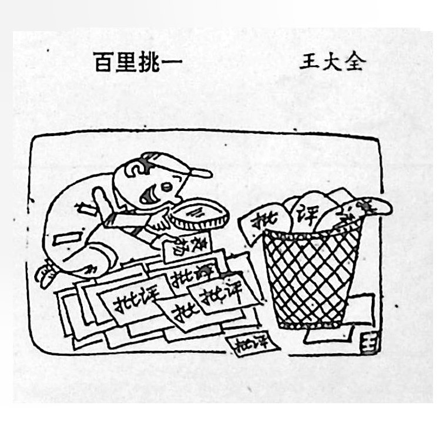

王大全 《人事》1990年第6期（总第57期），封三
百里挑一
One in a Hundred
- Text in the drawing
- 批评 / 表扬（？）
Criticism / Praise (?) - Description
- Kneeling over a heap of letters marked “criticism,” with a wastebasket overflowing with more of them, a cadre peers through a magnifying glass at the one letter he wants — apparently one of praise.
- Note
- 百里挑一, “one picked out of a hundred,” normally means exceptional. Letters from the public (来信) were supposed to be read and answered.
- Artist
- Wang Daquan 王大全
- Published in
- 《人事》1990年第6期（总第57期）, inside back cover
- Themes
- Complaints and petitions · Bureaucratism · Paperwork and documents

Cite
Wang Daquan, “百里挑一” [One in a Hundred], Renshi (Personnel) 《人事》, 1990, no. 6, inside back cover.